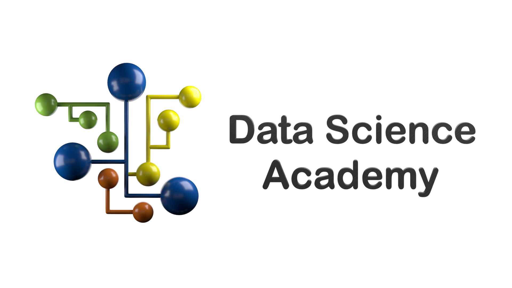
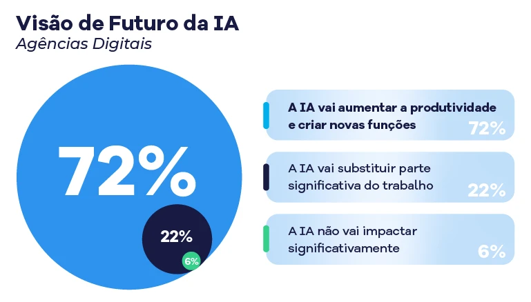

• Alura: Oferece a carreira de Engenharia de Agentes de IA, focando na criação e implantação de
soluções.
• Data Science Academy: Possui a Formação Engenheiro de Inteligência Artificial 4.0 que
cobre
desde conceitos básicos até redes neurais profundas.
• Udemy: Excelente para quem busca cursos focados em
ferramentas específicas. A Formação Engenheiro de IA Generativa ensina a utilizar frameworks
modernos como
LangChain, Langflow e LLMs.


Gráfico em:
hostgatorJúlio Vieira, Lucas Zelioli - 1C3 - EtecVAV